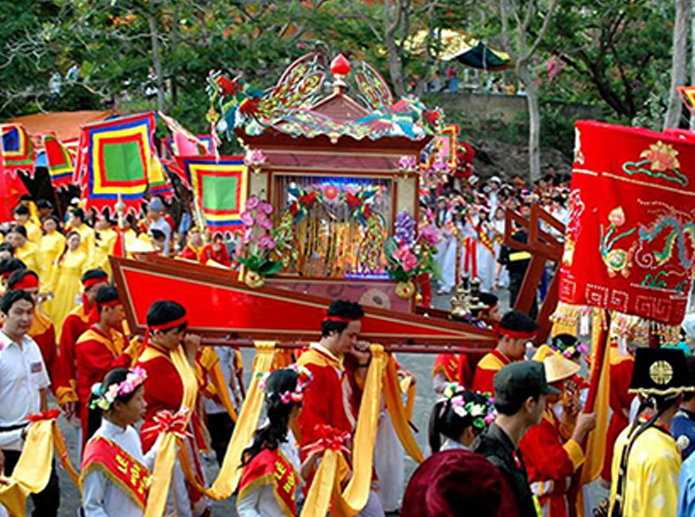
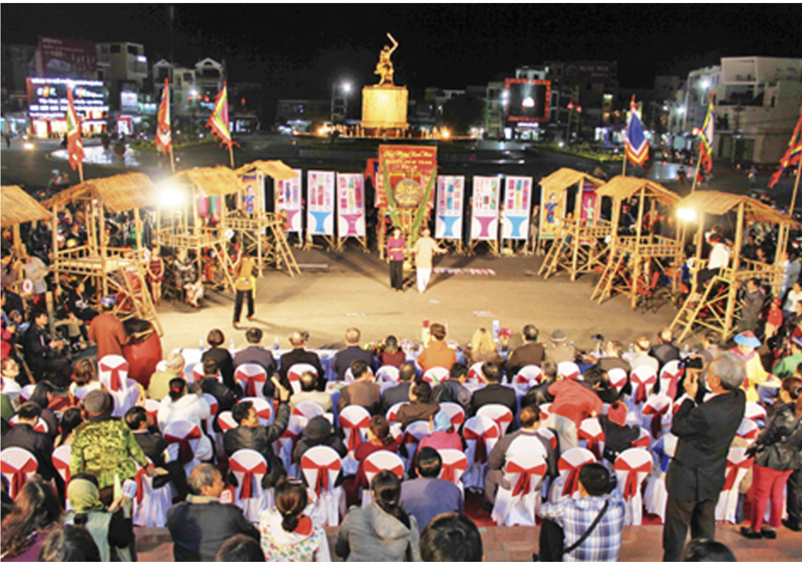

Văn hóa lễ hội Phú Yên
Cũng giống như những vùng đất khác, lễ hội là một trong những yếu tố làm tô điểm thêm nét đẹp cho bức tranh văn hóa Phú Yên. Có thể kể đến các lễ hội như:
- Lễ hội cầu ngư của ngư dân – xã An Phú, xã An Ninh Đông, huyện Tuy An và xã An Hải, Xuân Hoà, Xuân Cảnh, Xuân Thịnh của huyện Sông Cầu: diễn ra vào tháng 3, 4 và 5 của năm âm lịch.
- Lễ hội Đầm Ô Loan – xã An Cư, huyện Tuy An: diễn ra vào ngày 7 của tháng âm lịch đầu tiên.
- Lễ hội Đập Đồng Cam – thành phố Tuy Hoà: thường vào ngày 8 của tháng 8 âm lịch hằng năm.
- Hội thơ Nguyên Tiêu – Núi Nhạn, thành phố Tuy Hoà: diễn ra vào ngày 15 của tháng Giêng hằng năm.
- Lễ hội chọi trâu: diễn ra tại vùng núi Phú Yên như huyện Sơn Hoà, Đồng Xuân, Sông Hinh. Lễ hội diễn ra hơn 3 ngày 3 đêm, thường vào ngày 12 đến 13 âm lịch.
- Lễ hội gặt lúa: diễn ra ở các vùng miền núi như huyện Sơn Hoà, Đồng Xuân, Sông Hinh thường vào tháng 3 âm lịch hằng năm.
- Lễ bỏ mã: tại các vùng núi như huyện Sơn Hoà, Đồng Xuân, Sông Hinh.
- Lễ hội dâng hương tại đền Lê Thành Phương – ấp Mỹ Phú, xã An Hiệp, huyện Tuy An: diễn ra vào ngày 28 tháng Giêng.
Văn hóa nghệ thuật
Nền văn hóa Phú Yên được phong phú, đặc sắc như ngày nay không thể không kể đến những môn nghệ thuật truyền thống. Trong đó phải kể đến:
- Nghệ thuật hát tượng, bài chòi, hát bả trạo, những điệu hò của ngư dân.
- Các nghi lễ, tập tục và nhiều nhạc cụ độc đáo như trống đôi – ba lớn, cồng – chiêng vạch năm nhỏ của người dân tộc miền núi.
- Ngoài ra, việc tìm ra đàn đá, kèn đá có niên đại hơn 2.500 năm trước đây ở huyện Tuy An và nhiều di sản văn hóa Sa Huỳnh đã chứng minh Phú Yên là vùng đất có cư dân cổ sinh sống và có nền văn hóa độc đáo.